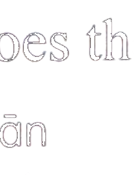

Wǒ ài kàn diànyǐng, yě ài chàng gē. Nǐ ne?男： 我爱看电影，也爱唱歌。你呢？Wǒ xǐhuan kàn女： 我喜欢看( )。
第四部分Part IVЧасть IV
第19—20题： 选择正确答案。Questions 19-20: Choose the correct answer for each question.Вопросы 19-20: Выберите правильный ответ на каждый вопрос.
例如：
请问现在几点了？
Excuse me, what time is it now?Простите, который сейчас час?★说话人想知道什么？
What does the speaker want to know?Что хочет знать говорящий?shíjiānA 时间
timeвремяmíngziB 名字
nameимяfángjiānhàoC 房间号
room numberномер комнаты明天星期天，儿子想去看一个电影。
★儿子明天想：
mǎi diànnǎoA 买电脑
dǎ diànhuàB 打电话
kàn diànyǐngC 看电影
下小雨了，小狗非常高兴，它喜欢小雨。
★小狗喜欢：
xià xiǎoyǔA 下小雨
xià dàyǔB 下大雨
xià xiǎoxuěC 下小雪